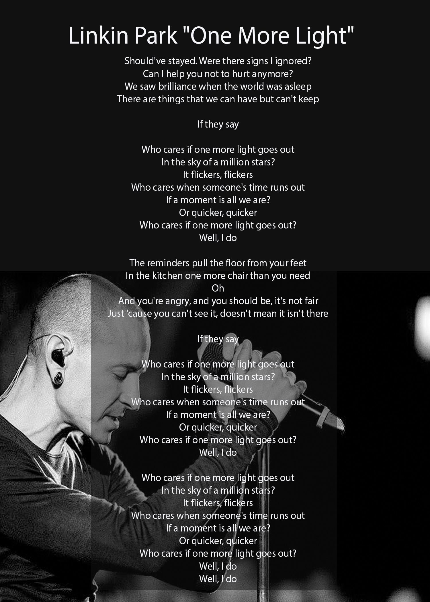

Home
History
1996–2000: Early years
2002–2004: Meteora
2004–2006: Side projects
2006–2008: Minutes to Midnight
2008–2011: A Thousand Sun
2011–2013: Living Things and Recharged
2013–2015: The Hunting Party
2015–2017: One More Light and Bennington's death
2017–present: Hiatus and future plans
C Bennington
One More Light
Linkin Park
